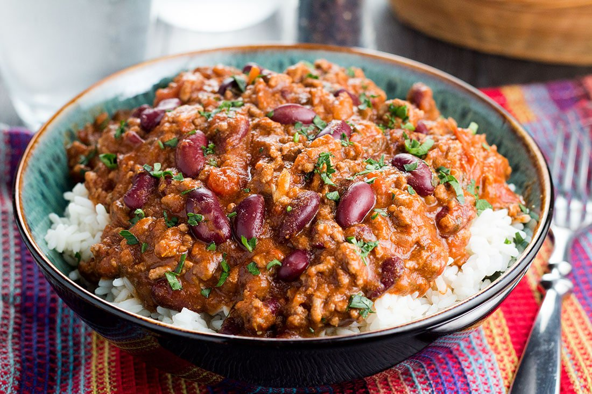

How to make chilli con carne

How to make chilli con carne & rice
Chilli con carne is an all-time favourite party dish that’s incredibly easy to make,
served here with a little grated chocolate for a bit of Mexican authenticity.
Ingredients
- 1 large red onions, finely chopped
- 1 tbsp olive
- 2 galic cloves, crushed
- 1 tsp chilli powder
- 3/4 tep smoked sweet paprika
- 1/2 tsp dried oregano
- 500g/1lb 2oz best-quality beef mince
- 2 tbsp tomato puree
- 1 x 400g/14oz tin kidney beans, drained & rinsed
- 1 red or green pepper, seeds removed and roughly chopped
- 1 x 400g/14oz tin best-quality chopped tomatoes
- 500-750ml/18-22fl oz beef stock
- sea salt and black pepper
- 2 squares 70% dark chocolate, grated
- small bunch coriander, chopped
To Serve
- cooked rice
- fresh coriander, roughly chopped
- soured cream
Time to cook up a storm!
- Heat a large casserole or heavy-based pan over a medium heat. Add a glug of oil and once hot add the onion.
Cook for a minute and add the carrots. Cook for 5-7 minutes, or until the onions are softened and translucent.
Add the garlic and cook for a further 2-3 minutes.
- Add the spices and the oregano and cook for two minutes, or until aromatic.
Add the beef, breaking it up as it fries into small pieces. Cook for 3-4 minutes,
or until brown all over and broken down into small pieces. Stir in the tomato purée and cook for two minutes.
- Stir in the kidney beans and chopped pepper, stirring over the heat for 3-4 minutes to soften the pepper a little,
then add the tomatoes and enough beef stock to slightly more than cover the meat.
Stir everything round, scraping the bottom of the pan with a wooden spoon to unstick any bits from the bottom,
and season with salt and pepper.
- Bring to a rapid simmer, reduce the heat to a gentle simmer and cook for 1½-2 hours, or until thickened and rich.
If at any point the liquid level looks low then add a little hot water or any remaining stock.
- Before serving, add the grated squares of chocolate and stir through the hot chilli con carne to melt.
Taste and season with salt and pepper as necessary.
- Serve with rice and garnish the chilli with coriander and soured cream.
Back to the top